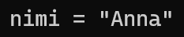
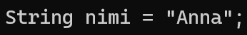
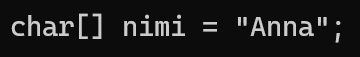
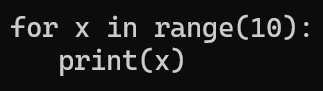
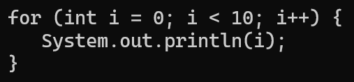
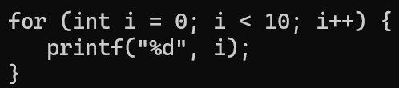

Ohjelmointi koostuu pienistä palasista, joita kutsutaan käsitteiksi. Tällä sivulla tutustut ohjelmoinnin perusrakenteisiin, joita tarvitset kaikissa ohjelmointikielessä. Opit, mitä ovat muuttujat, silmukat, ehtolauseet, ja näet esimerkkejä niiden käytöstä.
Muuttuja on kuin laatikko, johon voit tallentaa tietoa. Esimerkiksi nimi = "Anna" tallentaa merkkijonon muuttujaan nimi. Muuttujia käytetään ohjelmissa tietojen säilyttämiseen ja käsittelyyn.
Python kielessä tämä on todella yksinkertaista. Ohjelmassa esitellään muuttuja nimi jonka arvoksi asetetaan teksti.

Java kielessä pitää erikseen mainita mitä tyyppiä mikäkin muuttuja on. Tässä esimerkissä esitellään "String" tyyppinen muuttuja johon asetetaan arvoksi sama teksti. (String tarkoittaa tekstiä)

C kielessä pitää myös mainita muuttujan tyyppi erikseen, mutta toisin kuin Javassa, C kielessä ei ole "String" tyyppiä. C kielessä on kuitenkin "char" tyyppi johon voidaan asettaa yksi merkki (character). Lisäämällä palikkasulut tyypin perään voimme tehdä siitä muuttujan joka toimii kuin lista. Tällä listalla voimme tallentaa monia merkkejä joista koostuu teksti. Eli esittelemme lista muotoisen char muuttujan johon asetamme arvoksi saman tekstin.

Silmukka on osa koodia joka toistaa sen sisältävän koodin.
Pythonissa tämä on taas erittäin yksinkertaista. Käytämme for muotoista silmukkaa johon asetamme x nimisen muuttujan. Sen jälkeen "in" ja sen jälkeen annamme silmukalle listan jonka läpi tämä silmukka käy. Tässä esimerkissä käytimme metodia range() joka antaa silmukalle listan nollasta siihen numeroon asti joka metodille annetaan (tässä tapauksessa 10). Tässä koodissa silmukka siis käy koko listan läpi yksi arvo kerrallaan ja asettaa aina sen hetkisen arvon x muuttujaan. Tämän jälkeen silmukka toteuttaa sen sisällä olevan koodin, joka on tässä print() metodi. Print metodi tulostaa ruudulle sen mitä sille annetaan eli tässä kun annetaan x muuttuja niin se tulostaa x muuttujan arvon. Joten silmukka asettaa listalta yksi kerrallaan nollasta kymmeneen jokaisen arvon x muuttujaan ja tulostaa sen hetkisen arvon ruudulle.

Javassa for silmukka on hieman monimutkaisempi mutta sen takia se on myös joustavampi. for silmukan sisällä on 3 eri osiota jotka on eroteltu ";" merkillä. Ensimmäisessä osiossa esitellään in (integer eli kokonaisluku) tyyppinen muuttuja jonka nimi on "i" ja sen arvoksi asetetaan 0. Toisessa osiossa on totuuslauseke, for silmukka aina tarkistaa onko tämä lauseke tosi ennen kuin jatkaa silmukan sisällä olevan koodin ajamista. Tässä siis tarkistetaan että onko "i" muuttuja pienempi kuin 10. Jos "i" on pienempi silloin lauseke on tosi ja silmukan sisäinen koodi ajetaan. Jos "i" ei ole alle 10 silmukka ei aja sisältäväänsä koodia vaan siirrytään seuraavaan osaa koodia silmukan ulkopuolelle. Kolmannessa osassa voidaa lisätä koodia jonka silmukka ajaa aina kun se on suorittanut sisältävänsä koodin. Eli koska tässä siihen on lisätty "i++" se tarkoittaa ettö kun koodi on ajettu silmukka nostaa "i" muuttujan arvoa yhdellä (sama kuin "i = i + 1"). Silmukan sisällä oleva koodi tulostaa "i" muuttujan arvon ruudulle.

C:ss' for silmukka toimii samalla tavalla kuin javassa mutta metodi jolla tulostetaan muuttujan arvo ruudulle on eri.

Ehtolauseke on samalla tavalla osa koodia joka sisältää muuta koodia kuin silmukka, mutta tässä sen sisäinen koodi suoritetaan aina vain kerran. Ehtolausekkeeseen annetaan joku totuuslauseke ja jos se on tosi niin koodi suoritetaan. Jos ei ole lauseke ei ole tosi, koodia ei suoriteta ja siirrytään ehtolausekkeen ulkopuolelle.
Tämä on aikalailla sama kaikissa kielissä mutta taas arvon tulostus tapahtuu eri metodeilla eri kielissä. if lauseke tarkistaa onko annettu ehtolauseke tosi eli tässä onko a pienempi kuin b.
Funktiot on osa koodia joka sisältää muuta koodia samallaa tavalla kuin silmukat ja ehtolausekkeet mutta funktioissa itsessään ei ole toimintoja kuten ehdollinen koodin ajaminen ja moninkertainen koodin ajo. Funktion koodi ajetaan vain silloin kun jossain muualla koodissa kutsutaan kyseistä funktiota.
Pythonissa käytetään "def" sanaa kun esitellään funktio. "def" jälkeen tulee funktion nimi jolla sitä voidaan kutsua. Funktion sisällä on toinen funktio nimeltä print joka tulostaa sille annetun tiedon ruudulle.
Javassa yleensä käytetään sanaa metodi mutta tämä on vain synonyymi funktion kanssa. Java eroaa pythonista sillä että kuten muuttujien kanssa myös metodeille pitää erikseen asettaa tyyppi. Tämä tyyppi määrittää minkä tyyppisen muuttujan metodi palauttaa kun sitä kutsutaan. Tässä tapauksessa metodin tyypiksi on asetettu "void" joka tarkoittaa että metodi ei palauta mitään. Kuten aikaisemmissa esimerkeissä tässäkin kutsutaan metodia joka tulostaa tekstiä ruudulle.
C kielessä funktioiden tyyppi pitää myös antaa erikseen. Tässä tapauksessa annoimme funktion tyypiksi "int" (integer eli kokonaisluku) eli funktio palauttaa siis "int" tyyppisen muuttujan. Funktion sisällä on printf funktio joka tulostaa tekstiä ruudulle. Sen jälkeen on "return 0;" tässä "return" sanan jälkeen määritellään mitä funktio palauttaa. Eli koska olemme asettaneet "return":in jälkeen nollan funktio palauttaa arvon 0. Vaikka tässä ei manipuloida muuttujia tämä nollan palauttaminen voi silti olla hyödyllistä esimerkiksi vikojen löytämiseen. Esimerkiksi vertaamalla funktion palautetta ehtolausekkeessa voimme varmistaa että mitään ei ole menny pieleen ja funktio palauttaa sen mitä sen kuuluukin.